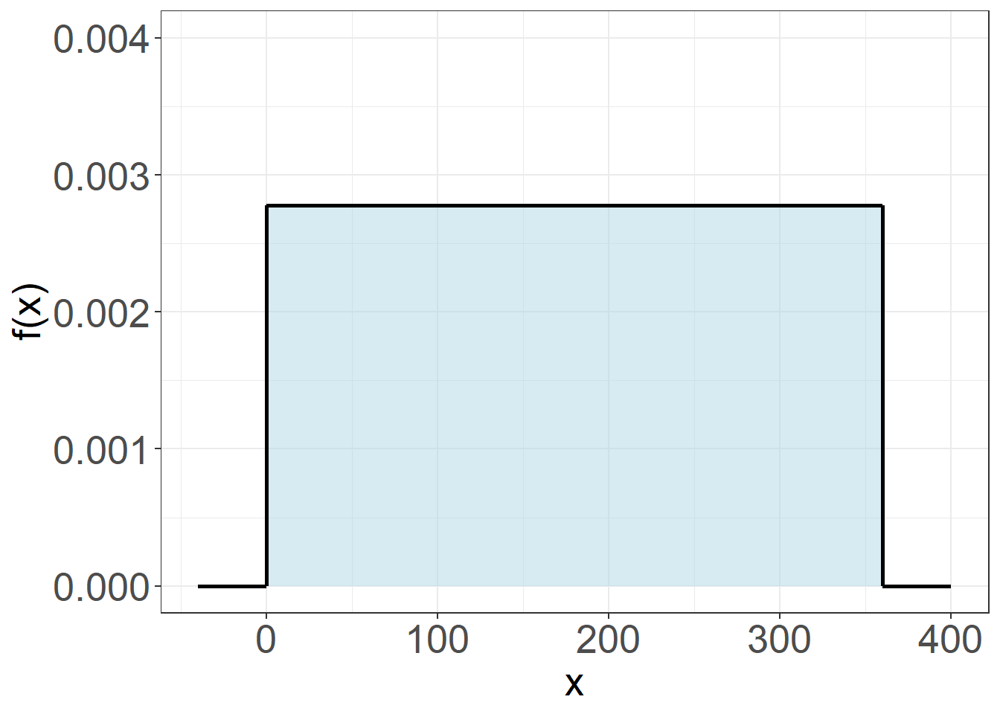
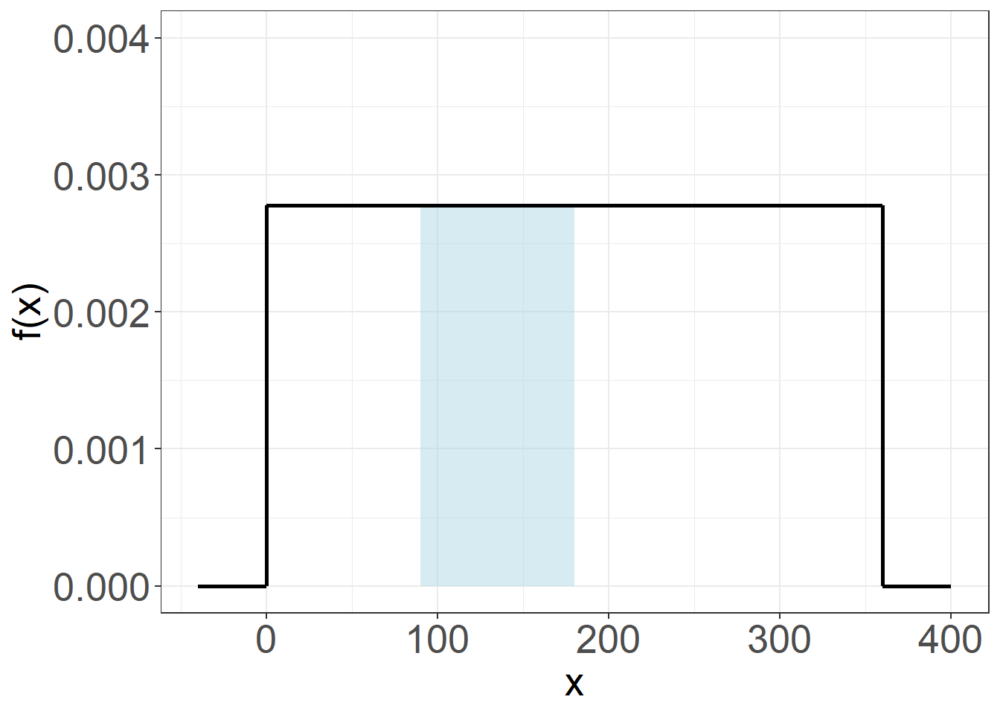
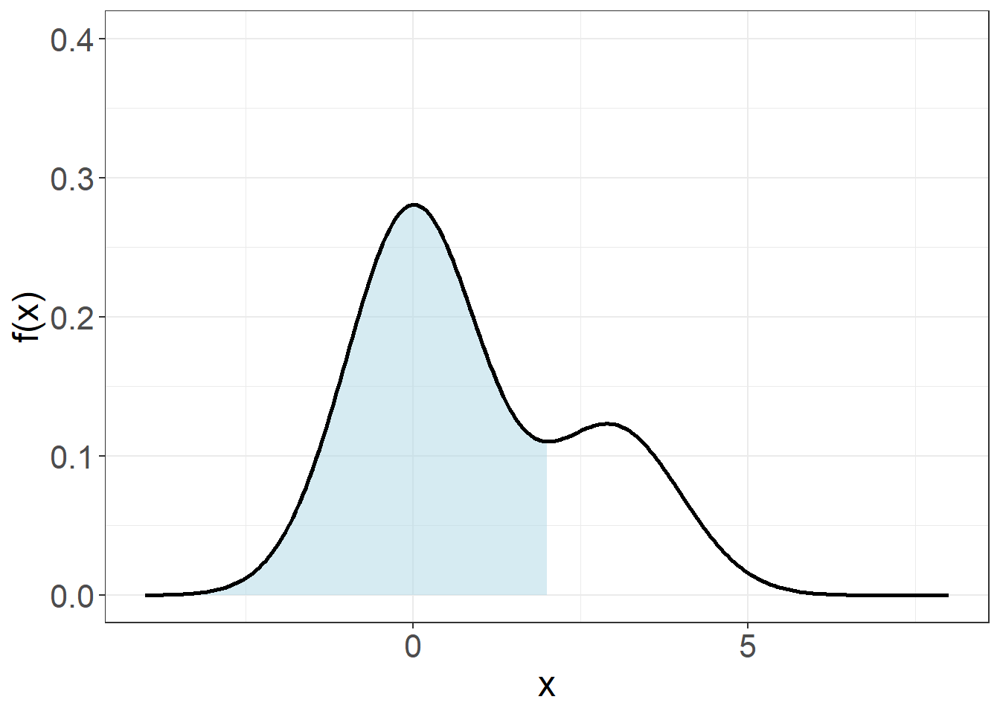

Chapter 6 Continous Random Variables
Most experiments involve the measurement of continuous quantities. Probabilities associated with continuous outcomes require special treatment. While continuous observations are constrained by the precision of the instrument, the outcomes themselves are not limited by experimental constraints. Instead, they represent the possible values a random variable can take, as if determined by an instrument with infinite precision. Continuous random variables can take values with any number of decimal places—even infinitely many. Moreover, these digits may be irregular but computable, allowing for outcomes such as \(\pi\) or \(\sqrt{2}\).
In practice, experiments with infinite precision are impossible. Real experiments introduce randomness, either through measurement error or in the process of generating the observation unit. Small changes in the conditions can generate large outcome differences. As a result, decimal digits will inevitably become blurred beyond a certain point. The extent of this blurring depends on the limitations imposed by technology or nature, which set the boundaries for how finely we can measure.
If randomness is allowed to occur at any level of precision due to differences in observation methods, continuous outcomes can be viewed as representing the ultimate scale: the real line.
In this chapter, we will study continuous random variables. Continuity is addressed through calculus. Although we will not formally define derivatives or integrals, we will use these tools to generalize the concept of probability and provide a solid foundation for understanding random experiments with continuous outcomes. Specifically, we will define the probability density function, along with its mean and variance. Additionally, similar to discrete random variables, we will introduce the cumulative distribution function.
6.1 Probabilities of continuous random variables
When we talked about continuous data, we saw that we had to transform them into discrete variables (bins) to produce relative frequency tables or histograms. Let us see how to define the probabilities of continuous variables taking these partitions into account.
Example (misophonia)
Let us reconsider the angle of convexity of patients with misophonia (Section 2.21). The angle of convexity of 123 patients was measured. We understood each measurement as the result of a random experiment that we repeated 123 times and that we could describe in a frequency table or in a histogram.
To do this, we redefine the results as small regular intervals (bins) and calculate the relative frequency of each interval.
\[ \begin{array}{ccc} \mathbf{outcome} & \mathbf{n_i} & \mathbf{f_i} \\ \mathrm{[-1.02,3.46]} & 8 & 0.06504065 \\ \mathrm{(3.46,7.92]} & 51 & 0.41463415 \\ \mathrm{(7.92,12.4]} & 26 & 0.21138211 \\ \mathrm{(12.4,16.8]} & 20 & 0.16260163 \\ \mathrm{(16.8,21.3]} & 18 & 0.14634146 \\ \hline \mathbf{sum} & 123 & 1 \end{array} \]
6.2 Relative frequencies
Following the frequentist definition of probability. The relative frequency of bin \((x_i, x_i + \Delta x)\) when \(n \rightarrow \infty\) is the probability that the random variable takes a value between \(x_i\) and \(x_i + \Delta x\)
\[lim_{n\rightarrow\infty}f_i=lim_{n\rightarrow\infty}\frac{n_i}{n} = P(x_i \leq X \leq x_i + \Delta x)\]
The probability depends now on the length of the bins \(\Delta x\). If we make the bins smaller and smaller then the frequencies get smaller and smaller because it is unlikely to find any observation is such a small bin; that is, \(n_i \rightarrow 0\). As a consequence, the probability also vanishes
\[P(x_i \leq X \leq x_i + \Delta x) \rightarrow 0\] when \(\Delta x \rightarrow 0\).
We now see how the frequencies get smaller when we divide the range of \(X\) into \(20\) bins
\[ \begin{array}{ccc} \mathbf{outcome} & \mathbf{n_i} & \mathbf{f_i} \\ \mathrm{[-1.02,0.115]} & 2 & 0.01626016 \\ \mathrm{(0.115,1.23]} & 0 & 0.00000000 \\ \mathrm{(1.23,2.34]} & 3 & 0.02439024 \\ \mathrm{(2.34,3.46]} & 3 & 0.02439024 \\ \mathrm{(3.46,4.58]} & 2 & 0.01626016 \\ \mathrm{(4.58,5.69]} & 4 & 0.03252033 \\ \mathrm{(5.69,6.8]} & 11 & 0.08943089 \\ \mathrm{(6.8,7.92]} & 34 & 0.27642276 \\ \mathrm{(7.92,9.04]} & 12 & 0.09756098 \\ \mathrm{(9.04,10.2]} & 4 & 0.03252033 \\ \mathrm{(10.2,11.3]} & 3 & 0.02439024 \\ \mathrm{(11.3,12.4]} & 7 & 0.05691057 \\ \mathrm{(12.4,13.5]} & 2 & 0.01626016 \\ \mathrm{(13.5,14.6]} & 6 & 0.04878049 \\ \mathrm{(14.6,15.7]} & 4 & 0.03252033 \\ \mathrm{(15.7,16.8]} & 8 & 0.06504065 \\ \mathrm{(16.8,18]} & 4 & 0.03252033 \\ \mathrm{(18,19.1]} & 9 & 0.07317073 \\ \mathrm{(19.1,20.2]} & 3 & 0.02439024 \\ \mathrm{(20.2,21.3]} & 2 & 0.01626016 \\ \hline \mathbf{sum} & 123 & 1 \end{array} \]
Let us just go to the limit and take \(\Delta =0\) then \(P(x_i \leq X \leq x_i)=P(X=x_i)=0\). This means that probability that a continuous random variable takes one single value is \(0\). While this may sound puzzling, think of the continuous real line. Imagine a random variable with possible values between \(0\) and \(5\). What is the chance that the random experiment gives the exact value of \(\pi\), with its infinite decimal places?
6.3 Probability Density Function
We define a quantity at a point \(x\) that is the amount of probability per unit distance that we would find in an infinitesimal bin \(dx\) at \(x\)
\[f(x)= \frac{P(x\leq X \leq x+dx)}{dx}\]
\(f(x)\) is called the probability density function. Density functions are how we deal with continuity. When we make the bin really small \(dx\) is small and the probability also. The ratio of these two small values, however, is constant at a given \(x\). What is the amount of mass in a particular point?. Zero. But the mass density at that point takes a finite value that can be different from zero. We can talk about probability densities as we talk about mass densities. The probability density at one point takes a finite value that can be different from zero.
Therefore, the probability that the random variable \(X\) takes a value between \(x\) and \(x+dx\) is given by
\[P(x\leq X \leq x+dx)= f(x) dx\]
Definition
For a continuous random variable \(X\), a probability density function is such that
- The function is positive:
\[f(x) \geq 0\]
- The probability that \(X\) takes any value is 1:
\[\int_{-\infty}^{\infty} f(x) dx = 1\]
- The probability that \(X\) is within an interval is the area under the curve:
\[P(a\leq X \leq b)=\int_{a}^{b} f(x) dx\]
The properties make sure that \(f(x)dx\) satisfies Kolmogorov’s axioms of a probability measure.
The probability density function is a step forward in the abstraction of probabilities: we add the continuous limit
\[dx \rightarrow 0\] to the already limit of infinite repetitions \(n \rightarrow \infty\) of the random experiment.
All the properties of probabilities are translated in terms of densities. From descrete random variables, we change summaions by integrations
\[\sum \rightarrow \int\] and we change point probabilities by probabilities within an interval \[P(X=x_i)=f(x_i) \rightarrow P(x\leq X \leq x+dx)= f(x)dx\]
Similar to probability mass functions for discrete variables, probability densities are mathematical quantities that do not necessarily represent random experiments. We are free to define them as long as we respect their properties.
However, a fundamental interest in statistics is to select the densities that better describe our particular random experiment.
6.4 Total area under the curve
Example (Needle drop)
Consider the following random experiment: Draw a line in a sheet of paper, hold a needle vertical to the paper and let it drop. Measure the angle at which the needle drops with respect to the line.
Different angles are derived from very small variations in the conditions of the experiment. Infinite small variations from the vertical line can give large differences in the angles. This random variation of external conditions is one of the ways that randomness can arise in an experiment. Without performing the experiment, we have no reason to believe that a range of angles is more likely that another, when we aim to let it drop from the vertical line. Therefore the probability density is constant for every angle \(X\) is given by
\[ f(x)= \begin{cases} \frac{1}{360},& \text{if } x\in (0,360)\\ 0,& otherwise \end{cases} \]
Let us verify that the function satisfies the three properties of a probability density.
It is evident from the definition that \(f(x) \geq 0\)
The probability of observing any angle; that is, that \(X\) takes any value, is summing up all the possible probabilities. That is the total area under the curve
\[P(-\infty\leq X \leq \infty)= \int_{-\infty}^{\infty} f(x) dx = 360\times \frac{1}{360}= 1\]

- The probability that \(X\) takes a value between \(90\) and \(180\) degrees is area under the curve within the interval
\[P(90 \leq X \leq 180) = \int_{90}^{180} f(x) dx = (180-90)\times \frac{1}{360}=0.25\]

6.5 Probabilities of continous variables
For continuous variables, we compute the probability that the variable is between \(a\) and \(b\). That is
\[P(a \leq X \leq b)\] We saw that for continuous variables, the probability that the experiment gives us a particular real number is zero: \(P(X=a)=0\). The probability \(P(a \leq X \leq b)\) is the area under the curve of \(f(x)\) between \(a\) and \(b\)
\[P(a \leq X \leq b) = \int_{a}^{b} f(x) dx\]

6.6 Probability distribution
The probability distribution \(F(c)\) is defined as the accumulation of probability up to the outcome \(c\)
\[F(c) = P(X \leq c)\]
That is the probability that the random variable is less or equal to \(c\). We can use \(F(c)\) to compute \(P(a \leq X \leq b)\).
Consider that:
- The probability accumulated up to \(b\) is given by
\[F(b) = P(X \leq b)=\int_{-\infty}^bf(x)dx\]

- That the probability accumulated up to \(a\) is
\[F(a) = P(X \leq a)\]

Then the probability that the random variable is between \(a\) and \(b\) is given by the difference in the probability distribution between \(a\) and \(b\)
\[P(a\leq X \leq b) = \int_a^b f(x)dx=F(b)-F(a)\]

Definition
The probability distribution of a continuous random variable is defined as the area under the curve up to \(a\)
\[F(a)=P(X\leq a) =\int_{-\infty} ^a f(x)dx\]
\(F(a)\) has the properties:
- It is between \(0\) and \(1\):
\[F(-\infty)= 0 \,\, and \,\,F(\infty)=1\]
- It always increases:
\[F(a)\leq F(b), \qquad \text{if} \qquad a\leq b\]
- It can be used to compute probabilities:
\[P(a \leq X \leq b)=F(b)-F(a)\]
- It recovers the probability density:
\[f(x)=\frac{dF(x)}{dx}\]
We use probability distributions to compute probabilities of a random variable within intervals. \(F(x)\) is derivative is the probability density function \(f(x)\).
Example (Needle drop)
For the uniform density function:
\[ f(x)= \begin{cases} \frac{1}{360},& \text{if } x\in (0,360)\\ 0,& otherwise \end{cases} \]
We find that the probability distribution is
\[ F(x)= \begin{cases} 0,& x \leq 0 \\ \frac{x}{360},& \text{if } x\in (0,360)\\ 1, & 360 \leq x \\ \\ \end{cases} \]
6.7 Probability plots
We can plot the the probability of a random variable in an interval as the area under the density curve. For instance
\[P(90\leq X \leq 180)\]

Or, equivalently, we can plot the probability \(P(90 \leq X \leq 180)\) as the difference in distribution values

6.8 Mean
As in the discrete case, the mean is the center of mass of probabilities and tells us the value around which we can expect the next observation of the random experiment.
Definition
Suppose \(X\) is a continuous random variable with probability density function \(f(x)\). The mean or expected value of \(X\), denoted as \(\mu\) or \(E(X)\), is
\[\mu=E(X)=\int_{-\infty}^\infty x f(x) dx\]
It is the continuous version of the center of mass.
Example (Needle drop)
The random variable with probability density
\[ f(x)= \begin{cases} \frac{1}{360},& \text{if } x\in (0,360)\\ 0,& otherwise \end{cases} \]
Has an expected value at
\[E(X)=\int_{0}^{360} x\frac{1}{360}dx= \frac{1}{2}\frac{x^2}{360} |_0^{360}= 180\]

6.9 Variance
As in the discrete case, the variance measures the dispersion of probabilities around the mean. It is the expected squared distance from the mean, indicating how far we expect the next observation of the random experiment to be.
Definition
Suppose \(X\) is a continuous random variable with probability density function \(f(x)\). The variance of \(X\), denoted as \(\sigma^2\) or \(V(X)\), is
\[\sigma^2=V(X)=\int_{-\infty}^\infty (x-\mu)^2 f(x) dx\]
It is the continuous version of the moment of inertia.
6.10 Functions of \(X\)
In many occasions, we will be interested in outcomes that are functions of the random variables. Perhaps, we are interested in the square of the elongation of a spring, or on the square root of the temperature of an engine.
Definition
For any function \(h\) of a random variable \(X\), with mass function \(f(x)\), its expected value is given by
\[E[h(X)]= \int_{-\infty}^{\infty} h(x) f(x)dx\]
From this definition we recover the same properties as in the discrete case:
The mean of a linear function is the linear function fo the mean: \[E(a\times X +b)= a\times E(X) +b\] for \(a\) and \(b\) scalars.
The variance of a linear function of \(X\) is:\[V(a\times X +b)= a^2\times V(X)\]
The expected squared distance about the origin is the mean squared plus the variance about the mean: \[E(X^2)=E(X)^2+V(X)\]
6.11 Exercises
6.11.0.1 Exercise 1
For the probability density
\[ f(x)= \begin{cases} \frac{1}{100},& \text{if } x\in (0,100)\\ 0,& otherwise \end{cases} \]
- compute the mean (A:\(50\))
- compute the variance using \(E(X^2)=V(X)+E(X)^2\) (A:\(100^2/12\))
- compute \(P(\mu-\sigma\leq X \leq \mu+\sigma)\) (A: \(0.57\))
- What are the first and third quartiles? (A: \(25\); \(75\))
6.11.0.2 Exercise 2
Given \[ f(x)= \begin{cases} 0, & x < 0 \\ ax, & x \in [0,3] \\ b, & x \in (3,5) \\ \frac{b}{3}(8-x),& x \in [5,8]\\ 0, & x > 8 \\ \end{cases} \]
What are the values of \(a\) and \(b\) such that \(f(x)\) is a continous probability density function? (A: 1/15; 1/5)
what is the mean of \(X\)? (A:4)
6.11.0.3 Exercise 3
For the probability density
\[ f(x)= \begin{cases} \lambda e^{-\lambda x},& \text{if } x \geq 0\\ 0,& otherwise \end{cases} \]
- Confirm that this is a probability density
- Compute the mean (A: 1/\(\lambda\))
- Compute the expected value of \(X^2\) (A: 2/\(\lambda^2\))
- Compute variance (A: 1/\(\lambda^2\))
- Find the probability distribution \(F(a)\) (A: \(1-exp(-\lambda a)\))
- Find the median (A: \(\log{2}\)/\(\lambda\))